Ecologia del Paisaje (1/2)
Ecología Integrativa
2023-07-24
Contenidos
- 24 de Julio: Conceptos de ecología del paísaje
- Introducción a ecología del paisaje
- Términos relevantes
- Conceptos de ecología del paisaje
- Ejemplo
- Aplicaciones desde la teledeteción
- 14 de agosto: Aplicación de metricas de ecología del paisaje en la cuenca del río Aconcagua
1. Introducción a Ecología del Paisaje
¿Por qué estudiar la ecología del paisaje?
Ecología del paisaje
Nació en los años 80s
Algunos desarrollos importantes:
- teoría de biogeografía de islas y metapoblación
- importancia de la escala en el estudio de los sistemas ecológicos
- cambio entre ver los sistemas ecológico de forma cerrada a una ecología de forma abierta e interconectada.
- desarrollo tecnológico en SIG (Sistemas de Información geográfica) y teledetección
Ecología del paisaje
- Dos corrientes principales
- Europea
- Estados Unidos
Patrones espaciales
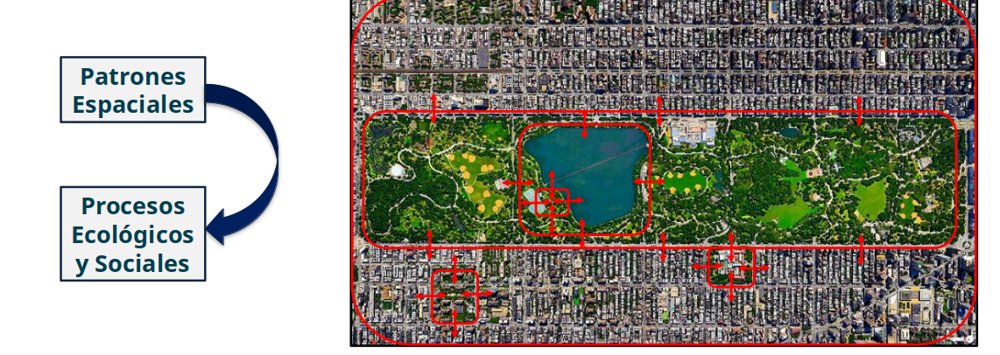La distribución espacial de los elementos en el espacio geográfico (
patrones espaciales) influye en las interacciones entre los elementos (procesos ecológicos)
Patrones espaciales
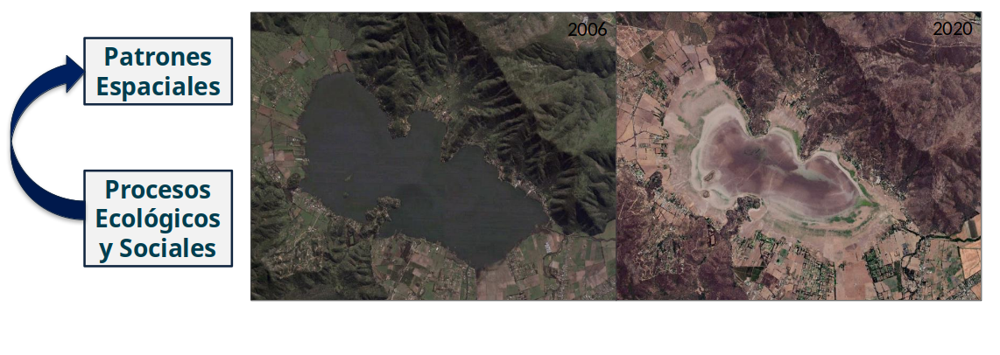Las interacciones de los elementos del espacio geográfico
(procesos ecológicos)modifica la distribución espacial de los elementos(patrones espaciales)
¿Qué es la ecología del paisaje?
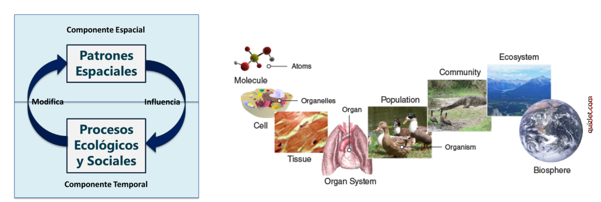La Ecología del Paisaje es la
cienciayartede estudiar e influenciar las relaciones entre lospatrones espacialesy losprocesos ecológicos(y sociales) a distintasescalas espacio-temporalesy niveles de organización. [Wu and Hobs, Key Topics in Landscape Ecology, 2007]
2. Términos relevantes
Composición:¿Qué y cuánto está presente de cada tipo de hábitat o cobertura?Configuración:Una disposición específica de elementos espaciales; a menudo se usa como sinónimo con estructura espacial o estructura parcheTipo de cobertura:Categoría dentro de un esquema de clasificación definido por el usuario que distingue entre los diferentes hábitats, ecosistemas, vegetación o tipos de paisaje.
2. Términos relevantes
Conectividad:el grado en que el paisaje facilita o impide el movimiento entre parches de recursos (Taylor et al., 1993).Corredor:Una franja relativamente estrecha de un tipo particular que difiere de la áreas adyacentes a ambos ladosBorde:La porción de un ecosistema o tipo de cobertura cerca de su perímetro, y dentro del cual las condiciones ambientales pueden diferir de las ubicaciones interiores en el ecosistema. También se utiliza como una medida de la longitud de adyacencia entre tipos de cobertura en un paisaje.Matriz:El(los) tipo(s) de cobertura de fondo en un paisaje, caracterizado por amplia cobertura y alta conectividad. No todos los paisajes tienen un matriz definibleParche:Un área de superficie que difiere de su entorno en naturaleza o apariencia
2. Términos relevantes
Fragmentación:Proceso por el cual un hábitat continuo es dividido en fragmentos de menor tamaño que están aislados entre sí por una matriz con características diferentes a las del hábitat original.

2. Términos relevantes
Mosaico de paisaje:Podemos entender elpaisajecomo unmosaicodedistintostipos deparches(composición) dispuestos en elespacio(configuración).
3. Conceptos de ecología del paisaje
Paisaje
Diccionario: Extensión de terreno vista desde un lugar determinado y considerada como espectáculo.
Paisaje
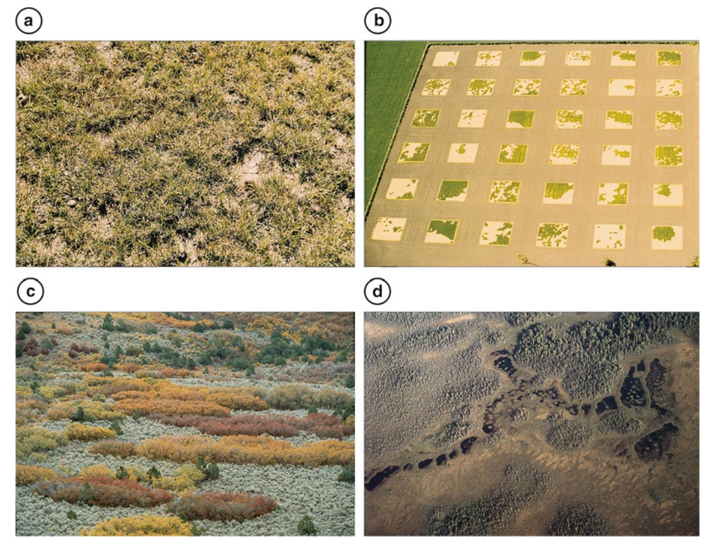Un área geográfica en que las variables de interés son espacialmente heterogéneas. Sus bordes pueden ser delineados en base a unidades geográficas, ecológicas o administrativas, que sean relevantes para la pregunta y objetivos de investigación. (Wu 2012)
Heterogeneidad
La cualidad de consistir de elementos diferentes, como con mezcla de hábitats o tipos de cobertura que ocurren en un paisaje; opuesto de homogeneidad, en que los elementos son iguales.
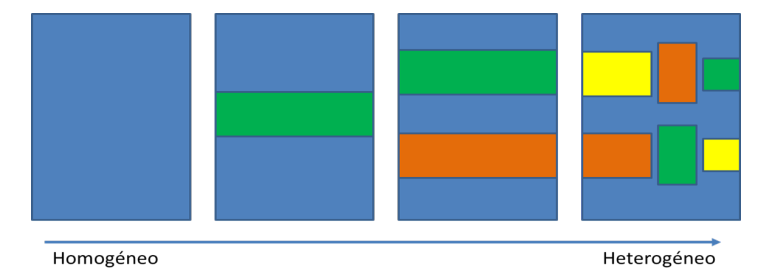En términos generales podemos entender que un sistema cualquiera será heterogéneo siempre y cuando posea diversidad interna.
Heterogeneidad
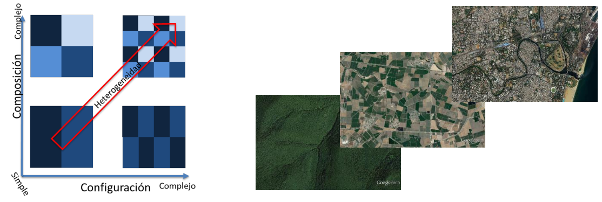La
heterogeneidad espacialestá definida por lacomposiciónde elementos que integran el sistema y suconfiguraciónespacial.
La heterogeneidad espacial influencia la forma en que interactúan los componentes de un sistema, y por tanto, los procesos ecológicos asociados a éste.
Heterogeneidad
Heterogeneidad
La heterogeneidad es una característica escala-dependiente.
Escala
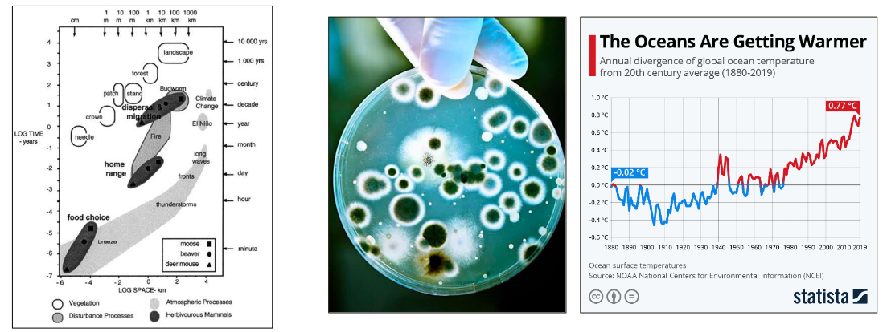Dimensión
espacialotemporalde un objeto o proceso, caracterizada tanto porgranocomo por suextensión.
Escala
La escala espacial está dada por:
-Grano: tamaño del pixel o área de la unidad mínima de muestreo
-Extensión: tamaño del área de muestreo
Escala
La escala temporal está dada por:
-Grano: Frecuencia de muestreo (ventana temporal de muestreo)
-Extensión: Período de muestreo
Patrones espaciales
Se podría decir que un patrón espacial es la estructura espacial de la heterogeneidad de los elementos de interés en un área determinada.
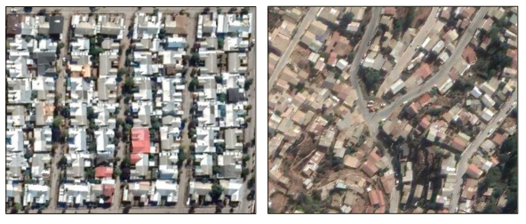
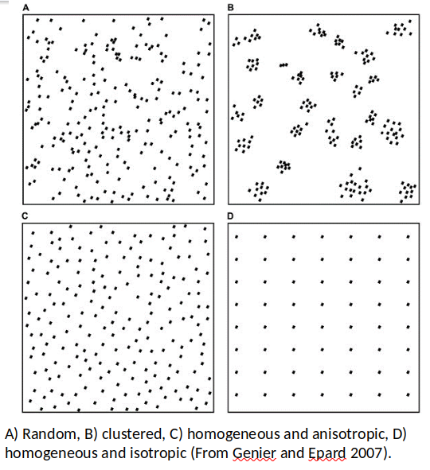
Patrones espaciales
Los patrones espaciales representan una interpretación (cuantitativa o cualitativa) de la heterogeneidad espacial.
Patrones espaciales
Los patrones espaciales son características escala-dependientes
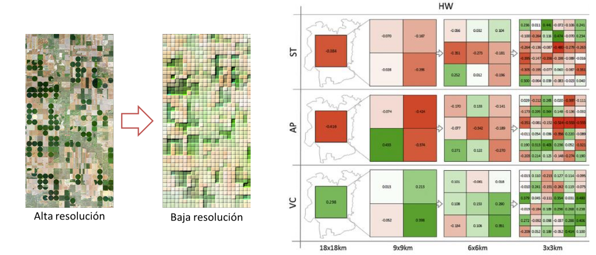Procesos ecológicos
Representan las interacciones entre los organismos y su ambiente físico, químico y biológico, a distintas escalas.
Procesos ecológicos
También son fenómenos escala-dependientes
Jerarquías espaciales
Los sistemas complejos (sistemas naturales y socio-ecológicos) usualmente se encuentra estructurados de manera jerárquica en subsistemas interconectados.
Jerarquías espaciales
En un sistema anidado, los cambios suelen ser más rápidos a escalas inferiores, y más lentos a escalas superiores.
Los niveles de interacción son mayores dentro de un subsistema, que entre subsistemas.
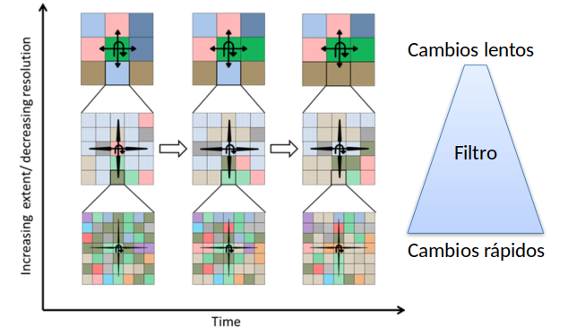
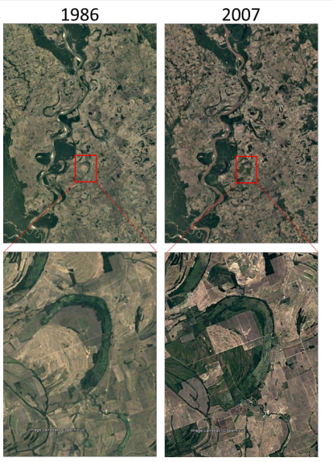
Jerarquías espaciales
En sistemas jerárquicos los factores moduladores de la heterogeneidad actúan desde arriba estabilizando, y desde abajo alterando los patrones espaciales observados en la escala foco.
Resumiendo
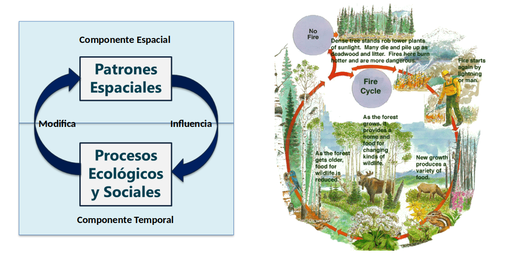Ejemplos
¿Cómo será la diversidad de aves en esta plaza?¿Por qué?
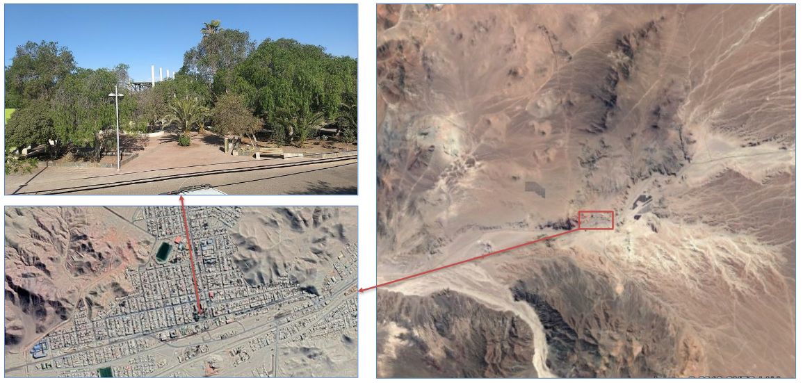¿Cómo será la diversidad de aves en esta plaza?¿Por qué?
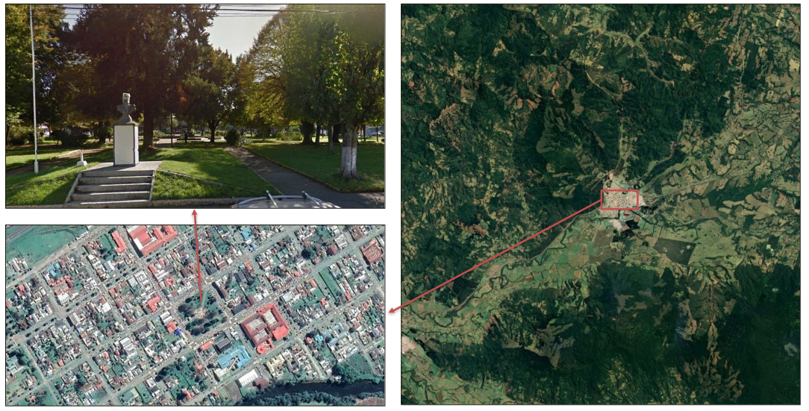Teoría biogeográfica de Islas: ¿Dónde habrán más especies?
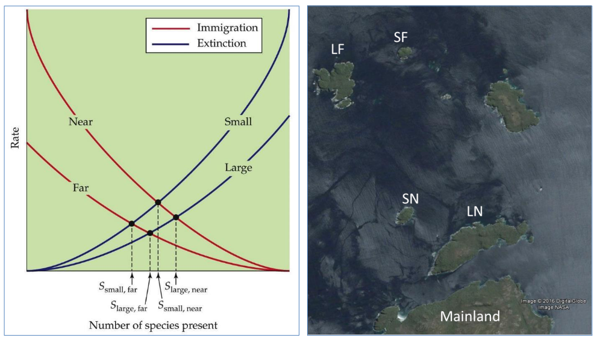La teoría biogeográfica de islas puede aplicarse a cualquier sistema aislado
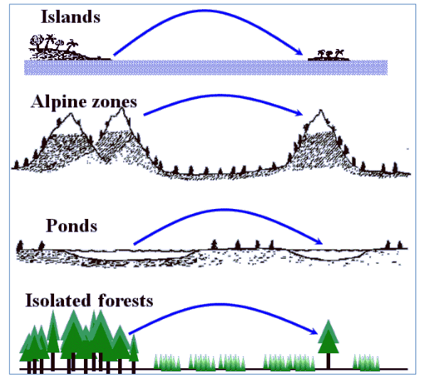Aplicaciones desde la teledetección
Importancia de la teledetección para la ecología del paisaje
Desde los años 70 ha aumentado la disponibilidad de datos de observación de la tierra de forma exponencial.
Revolución de geodatos (sobrecarga de datos)
Diferentes tipos de
sensorespermitencapturar datos a diferentes escalasespacio-temporalesa nivelglobal:- Landsat
- Sentinel (1,2)
- MODIS
La existencia de plataformas para el
procesamientode datos en lanube(ej., microsoft planetary computer, Google Earth Engine) que permiten tenerdatos preprocesados.Desarrollo y
mejorade los algoritmos declasificación.
Uso de teledetección para ecología del paisaje
Ecólogos de paísaje utilizan teledetección por tres razones:
- para
cuantificarlaestructuradelpaisajeen base a imágenes clasificadas; - identificar el
cambio del paisajey su impacto y hacer prediccionesfuturasutilizando modelosestadísticos; y cuantificarlafuncióndel paisaje.
Aplicación 1: Sequía en Chile
Impacto de la sequía en los diferentes uso de suelo a lo largo de Chile entre 1981-2023 (Zambrano et al., 2023)
Aplicación 1: Sequía en Chile
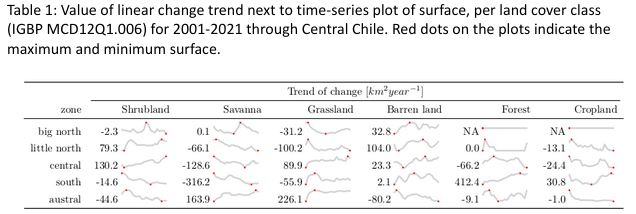Aplicación 1: Sequía en Chile
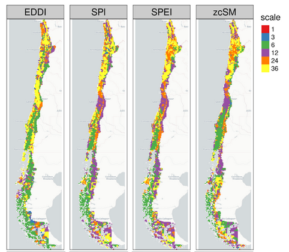Aplicación 1: Sequía en Chile
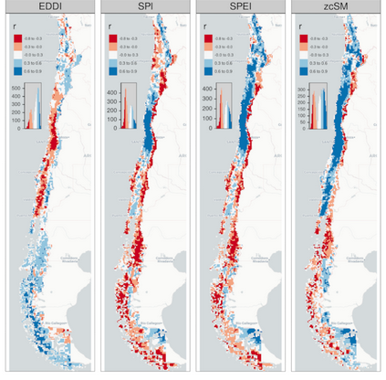Aplicación 1: Sequía en Chile

Aplicación 2: Tendencia de cambio en bosques
Título: Mapping forest growth and decline in a temperate mixed forest using temporal trend analysis of Landsat imagery, 1987-2010. (Czerwinski et al., 2014)
Objetivo: identificar y mapear gradientes de cambio en los ecosistemas de bosque en todo el Parque Gatineau durante un período de aproximadamente dos décadas.
Czerwinski CJ, King DJ, Mitchell SW. Mapping forest growth and decline in a temperate mixed forest using temporal trend analysis of Landsat imagery, 1987-2010. Remote Sens Environ. 2014;141: 188–200.
Aplicación 2: Tendencia de cambio en bosques
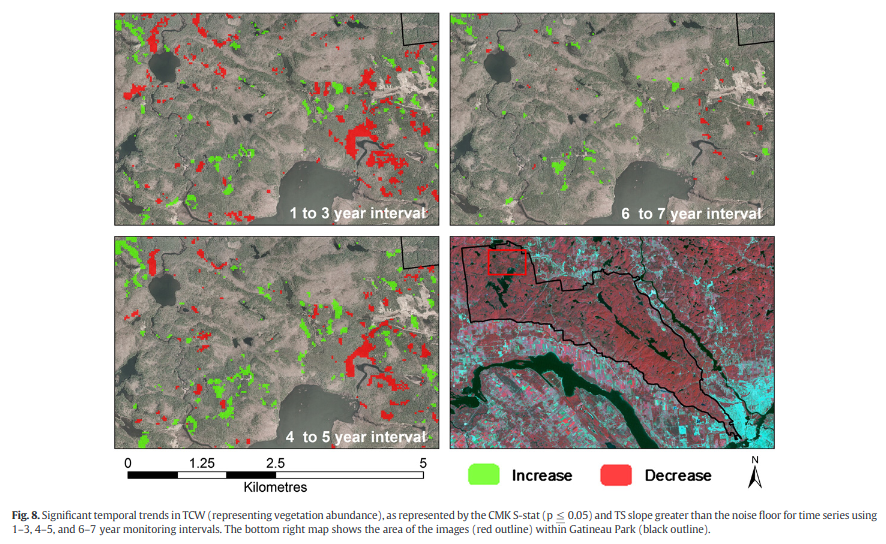Aplicación 3: Expansión urbana
Título: Rates and patterns of urban expansion in China’s 32 major cities over the past three decades. (Zhao et al., 2015)
Objetivo: mapear y cuantificar las tasas, patrones espaciales, y cursos temporales de expansión urbana para 32 ciudades en China.
Zhao S, Zhou D, Zhu C. Rates and patterns of urban expansion in China’s 32 major cities over the past three decades. Landsc Ecol. 2015;30:1541–59.
Aplicación 4: Desigualdad ambiental
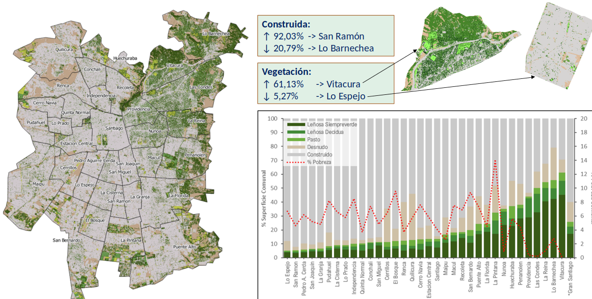Aplicación 4: Desigualdad ambiental

Ecología del Paisaje